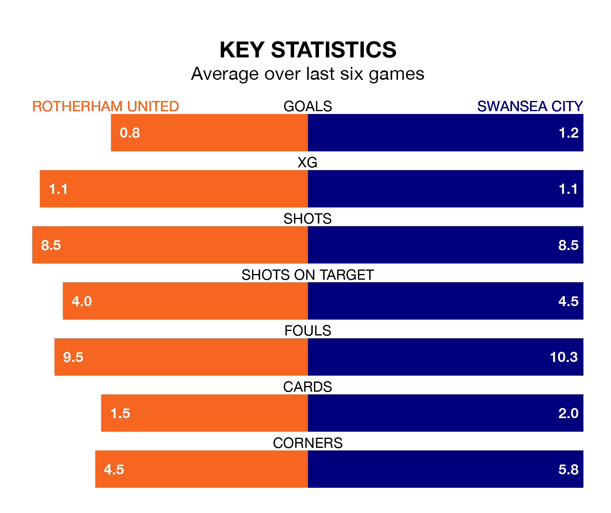

Rotherham United face Swansea City at the AESSEAL New York Stadium on Saturday looking to secure a first win in eight Championship games.
The Millers have lost three and drawn four matches since they last earned three points – against Coventry City on October 25.
They face a Swansea side who have won one and drawn three over that time.
Rotherham are 23rd in the table after 19 games, of which they have won two and drawn seven, earning 13 points.
Swansea are five places ahead of United in 18th, with five wins and six draws putting them on 21 points.
In Joël Piroe, City have one of the league's most on-form strikers so far this season. He has notched eight goals in 19 appearances, to sit fourth in the scoring charts.
The Millers' top scorers, with three goals each, are Hakeem Odofin and Jordan Hugill.
With 17 goals in 19 games so far this season, the hosts are the league's joint-third-lowest scorers with 0.9 goals per game. And they are conceding more than average, letting in 37 goals at a rate of 1.9 per game.
The Swans, meanwhile, are average scorers, with 1.4 goals per game. They have also conceded 1.4 goals per game.
In the last five years, Rotherham and Swansea have played each other on five occasions. Swansea won three of them and they drew twice.
On average, the Millers scored 1.2 goals and the Swans 2.0 in those matches.
Their last meeting was on February 27, when they played out a 1-1 draw.
Rotherham's last match was on December 2, a 0-0 draw against Birmingham City.
Swansea drew 1-1 with Huddersfield Town last time out, also on December 2, with Charlie Patino on the scoresheet.
